| Team Members | |
| Riyansh Choudhary | SAP ID 500122039 |
| Pranav Singh Puri | SAP ID 500122453 |
| Kartikya Yadav | SAP ID 500122804 |
| Rudra | SAP ID 500124508 |
| Sushant Jaiswal | SAP ID 500123999 |
| Mentor: Imran Khan | |
Live application: healthpredictor092005.streamlit.app
Source code: github.com/2005Maverick/early-disease-prediction-
References
This report presents the Early Disease Prediction System, a machine-learning application that estimates a patient's risk of diabetes or heart disease from routine lifestyle, demographic and clinical measurements, before symptoms appear. The system is designed around a principle that most student and industry prototypes ignore: a prediction is only useful if the user can tell how much to trust it. Instead of a single risk number, an Uncertainty Engine — 200 gradient-boosting pipelines, each trained on a different bootstrap resample of the study population — produces a full risk distribution per patient, whose spread is an honest measure of confidence. A second, entirely model-free method (Patients Like You, a 50-nearest-neighbour lookup over the standardized study population) provides an independent second opinion, and agreement between the two methods is surfaced to the user. All reported metrics are strictly out-of-fold (5-fold stratified cross-validation): the deployed ensembles achieve a ROC AUC of 83.5% for diabetes (Pima study, 768 patients) and 90.0% for heart disease (Cleveland study, 303 patients) at a recall of at least 85% by construction, the alert threshold being derived from an explicit clinical rule rather than tuned by hand. Empirically, the uncertainty is informative: the error rate rises from 6% among the quarter of patients with the narrowest confidence bands to 43% among the widest (diabetes; 4% to 46% for heart disease) — the system measurably knows when it does not know. The delivery layer is a deployed Streamlit application styled as an interactive lab report, with per-patient risk drivers, a what-if lifestyle simulator, and a guideline-based preventive plan. The architecture is disease-agnostic: each disease is a plug-in configuration file, so extending the system to a third disease requires one new file and a retraining run.
Keywords: early disease prediction, uncertainty quantification, bootstrap ensembles, gradient boosting, nearest neighbours, calibration, explainable AI, Streamlit.
Type-2 diabetes and cardiovascular disease are two of the most common chronic conditions worldwide, and both share a property that makes them natural targets for machine learning: they develop silently for years before diagnosis, while leaving statistical fingerprints in measurements that are cheap and routine — blood glucose, body-mass index, blood pressure, cholesterol, age, family history. Landmark trials such as the Diabetes Prevention Program have shown that when elevated risk is identified early, lifestyle interventions can cut disease incidence dramatically (58% for diabetes) [8]. The value of an early-warning model is therefore not the prediction itself but the action it enables.
Most classroom risk-prediction projects follow a fixed template: train a classifier on a public dataset, report accuracy on data the model has partially seen, and wrap the result in a web form. This project deliberately departs from that template in four ways. First, it reports only out-of-fold metrics — every number in this report was measured on patients the model never saw during training. Second, it treats uncertainty as a first-class output: the user sees not just "84.8% risk" but how much 200 independently trained models disagree about that number. Third, it provides an independent second opinion computed without any model at all, so that trust does not rest on a single method. Fourth, it converts predictions into concrete preventive actions traced to clinical guidelines, closing the loop from data to decision.
The result is a working, publicly deployed system covering two diseases, built on one shared engine, with a test suite, a reproducible training pipeline, and a figure-generation script that produced every chart in this report from the actual artifacts.
Despite a decade of deep-learning progress, tree-based ensembles remain the strongest general-purpose learners for small and medium tabular datasets. Grinsztajn et al. [5] show systematically why tree ensembles outperform neural networks on tabular data of this scale, attributing the gap to the rotation-variance of trees and their robustness to uninformative features. Gradient boosting [3] builds an additive sequence of shallow trees, each correcting the residual errors of its predecessors, and is the base learner used here. Random forests [2] and regularized logistic regression serve as baselines; with 768 and 303 patients respectively, our datasets sit squarely in the regime where these classical methods are expected to dominate, and our own comparison (Section 7.1) confirms it.
A single classifier's probability output conflates two different things: the risk of the patient, and the model's confidence in that estimate. The bootstrap [1, 9] offers a conceptually simple separation: train many models on resamples of the data, and read the spread of their predictions as sampling uncertainty. Bagging [1] originally used this for variance reduction; we retain the averaged prediction for accuracy but additionally expose the full distribution to the user. This is closely related to deep ensembles in the neural network literature, widely regarded as the most reliable practical uncertainty method, here applied in its natural tabular form.
Post-hoc explanation methods such as SHAP assign each feature a contribution to a prediction. We use a deliberately simpler scheme — median substitution: replace one of the patient's values with the population's typical value, re-run the model, and report the risk change. It is model-agnostic, exact for the deployed ensemble, and explainable to a non-technical audience in one sentence. The Patients Like You view draws on the oldest idea in pattern recognition, nearest-neighbour classification [7]: presenting the outcomes of the fifty most similar real patients is both an independent risk estimate and a form of case-based explanation that clinicians find natural. Finally, calibration — whether a stated "70%" corresponds to a 70% observed event rate — is assessed with reliability diagrams as in the classical calibration literature [10].
Can routine lifestyle, demographic and clinical measurements be combined into a per-patient disease-risk assessment that is (i) measured honestly, on patients the model has never seen; (ii) accompanied by a truthful statement of the model's own confidence; (iii) corroborated by an independent, model-free method; and (iv) actionable, in the form of specific preventive steps traced to clinical guidelines — all delivered in an interface a non-technical user can operate?
The system is organised in two phases (Figure 1). Offline, a training pipeline loads each disease's dataset, repairs its hidden missing values, evaluates four candidate models with stratified 5-fold cross-validation, derives the alert threshold from a stated recall rule, and saves the deployed artifacts. Online, a gated intake form collects the patient's values; on explicit submission the trained ensemble scores the patient once, the 50 most similar real patients are retrieved, and a five-section assessment report is rendered. Nothing is predicted until the user asks — the interface enforces a clear causal moment between input and output.
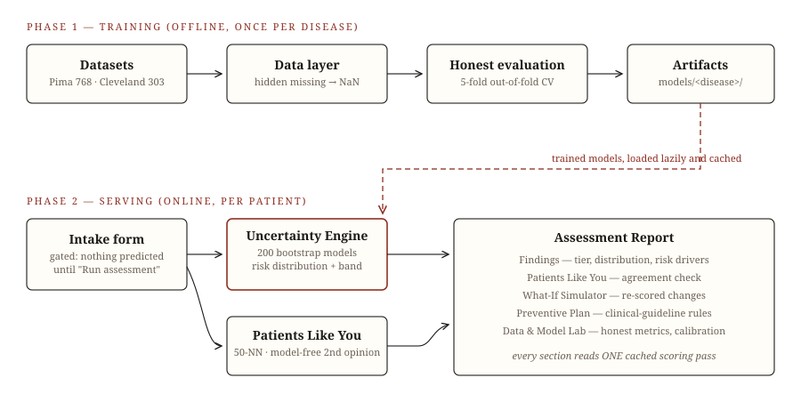
A key architectural decision is that the engine is disease-agnostic (Figure 2). Everything specific to a disease — dataset location, feature list and semantics, which values are physiologically impossible, the intake form specification, the what-if scenarios and the prevention rules — lives in one configuration object per disease. The ensemble, the neighbour engine, the threshold rule, the explanation methods, the training pipeline and the entire user interface are shared. Supporting a third disease means writing one new configuration file and running the trainer.
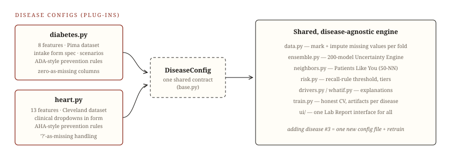
Two classical, publicly available clinical datasets are used (Table 1). The Pima Indians Diabetes Database [6] records eight measurements for 768 women aged 21 and above, with a binary outcome indicating development of diabetes. The Cleveland Heart Disease dataset [4] records thirteen clinical features for 303 patients undergoing angiography; the original five-level diagnosis is binarized (any vessel narrowing > 50% counts as disease), which is the standard treatment in the literature.
| Disease | Source study | Patients | Features | Positive rate |
|---|---|---|---|---|
| Diabetes | Pima (NIDDK) [6] | 768 | 8 | 34.9% |
| Heart disease | Cleveland Clinic (UCI) [4] | 303 | 13 | 45.9% |
The Pima dataset contains a famous trap that most projects on it silently fall into: zeros in Glucose, BloodPressure, SkinThickness, Insulin and BMI. A blood-sugar or BMI of zero is physiologically impossible — these are undocumented missing values, not measurements. Feeding them to a model as real numbers distorts every downstream statistic. Our data layer marks them as missing (Figure 4); imputation with the training-fold median then happens inside each model pipeline, so it is re-fitted on every cross-validation fold and no information can leak from test to train. The Cleveland dataset marks its six missing entries explicitly with "?"; the same machinery absorbs them. The same mechanism also serves the user interface: a patient who does not know their serum insulin can mark it "unknown", and the model imputes it transparently.
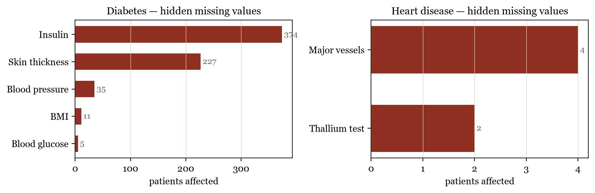
Figures 5 and 6 show the distributions of headline features split by outcome. The separations visible to the naked eye — glucose and BMI for diabetes; maximum achieved heart rate, ST depression and age for heart disease — anticipate the feature importances the models later learn, and match clinical intuition.
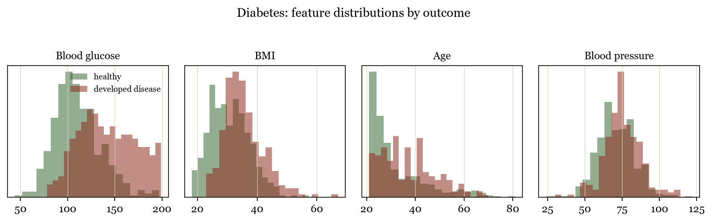
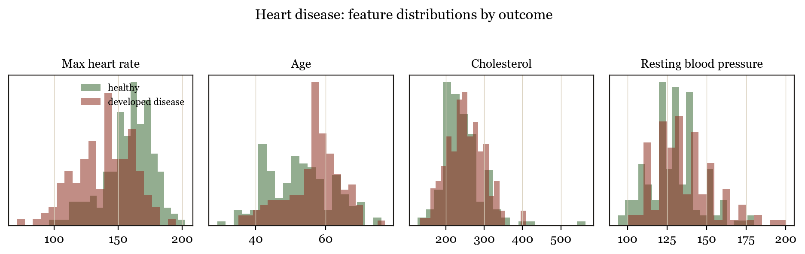
The deployed model is a bootstrap ensemble of 200 identical scikit-learn pipelines (Figure 3, Table 2). Each member consists of a median imputer, a standard scaler and a gradient-boosting classifier with library-default hyperparameters (100 trees of depth 3, learning rate 0.1). Each member is trained on its own bootstrap resample — n patients drawn with replacement from the n available — with a distinct random seed. At prediction time every member outputs a probability, giving a 200-value distribution per patient: its mean is the headline risk score, its 5th–95th percentile range is reported as a 90% confidence band, and the full histogram is shown to the user.
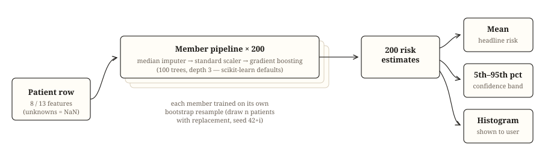
| Component | Choice | Rationale |
|---|---|---|
| Imputation | median, per training fold | robust; no leakage |
| Scaling | standardization | method-agnostic pipeline |
| Base learner | gradient boosting (100 trees, depth 3, lr 0.1) | strongest single model class for tabular data [5] |
| Ensemble | 200 bootstrap members, seeds 42–241 | uncertainty via bootstrap [1, 9]; variance reduction |
| Hyperparameters | scikit-learn defaults, untuned | with ~600 training rows per fold, aggressive tuning fits noise; evaluation integrity was prioritised |
Why not deep learning? With 768 and 303 patients, the datasets are two to three orders of magnitude below the regime where neural approaches become competitive on tabular data [5]. The novelty of this system is deliberately not an exotic architecture but what is built around a proven one: uncertainty, corroboration, honest evaluation and actionable explanation.
The second opinion uses no model at all. All study patients are imputed and standardized once; a nearest-neighbour index [7] then retrieves the 50 patients closest to the query in Euclidean distance, and the system reports how many of them actually developed the disease. Because this estimate shares no machinery with the ensemble, agreement between the two is meaningful evidence, and disagreement flags an unusual patient — exactly the case where extra caution is warranted. The interface states explicitly which situation applies.
Converting a risk score into an alert requires a threshold, and in a medical screening context the costs of the two error types are asymmetric: missing a true future patient costs more than a false alarm. The threshold is therefore derived from an explicit rule — among all thresholds whose out-of-fold recall is at least 85%, choose the one with the highest precision — rather than defaulting to 0.5 or tuning by eye. The rule yields 23.8% for diabetes and 27.3% for heart disease (Figure 10). Both the rule and its consequence are displayed in the application itself.
Per-patient explanations use median substitution: for each feature, the patient's value is replaced by the population median and the ensemble is re-run; the resulting risk drop is that feature's personal contribution ("your glucose alone adds 34 points"). The what-if simulator applies the same mechanism prospectively, re-scoring the patient under achievable changes (lose weight, lower glucose or cholesterol) that are generated per disease and only when applicable to the individual. Preventive recommendations are deliberately rule-based, written from published clinical reference ranges (e.g. impaired glucose tolerance at 140–199 mg/dL; stage-2 hypertension at ≥140 mm Hg), because prevention advice must be traceable to a guideline, not to a statistical artifact.
All models are evaluated with stratified 5-fold cross-validation. Within each fold, the full pipeline — imputation, scaling, and for the ensemble the entire 40-member bootstrap procedure — is fitted from scratch on the training portion and scored on the held-out portion, so every prediction used in this report is out-of-fold: made by a model that never saw that patient. The deployed 200-member ensembles are then trained on all data. The threshold rule, the calibration analysis and the uncertainty analysis below all operate exclusively on the out-of-fold scores. The unit-test suite (15 tests) covers the data repair, threshold rule, tier logic, explanation and scenario builders, and both engines.
Tables 3 and 4 compare the Uncertainty Ensemble against three single-model baselines on identical folds, all evaluated at each disease's rule-derived threshold.
| Model | Accuracy | Precision | Recall | F1 | ROC AUC |
|---|---|---|---|---|---|
| Uncertainty Ensemble | 73.1 | 57.7 | 85.1 | 68.8 | 83.5 |
| Logistic Regression | 70.4 | 55.0 | 84.7 | 66.7 | 83.5 |
| Random Forest | 69.9 | 54.2 | 88.4 | 67.2 | 83.3 |
| Gradient Boosting | 73.1 | 57.9 | 83.2 | 68.3 | 82.6 |
| Model | Accuracy | Precision | Recall | F1 | ROC AUC |
|---|---|---|---|---|---|
| Uncertainty Ensemble | 78.6 | 72.6 | 85.6 | 78.6 | 90.0 |
| Logistic Regression | 80.9 | 74.9 | 87.8 | 80.8 | 90.9 |
| Random Forest | 74.9 | 66.3 | 92.1 | 77.1 | 91.2 |
| Gradient Boosting | 80.2 | 74.5 | 86.3 | 80.0 | 88.5 |
On diabetes the ensemble matches or beats every baseline on every aggregate metric. On the smaller Cleveland dataset the picture is more nuanced — logistic regression and random forest edge slightly ahead on AUC (90.9 and 91.2 versus 90.0). We report this openly: the ensemble was nevertheless chosen for deployment because it is the only candidate that produces a per-patient uncertainty distribution, and Section 7.4 shows that this uncertainty carries real information a point estimate cannot. Within roughly one AUC point, the honest confidence band is worth more than the marginal discrimination.
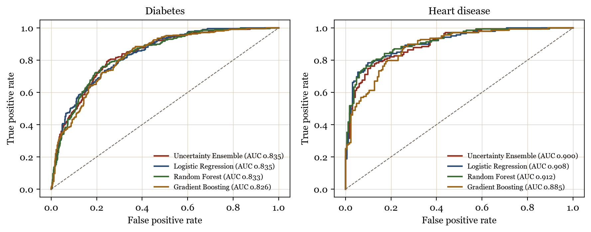
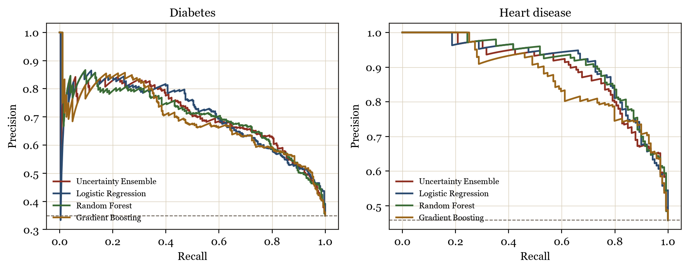
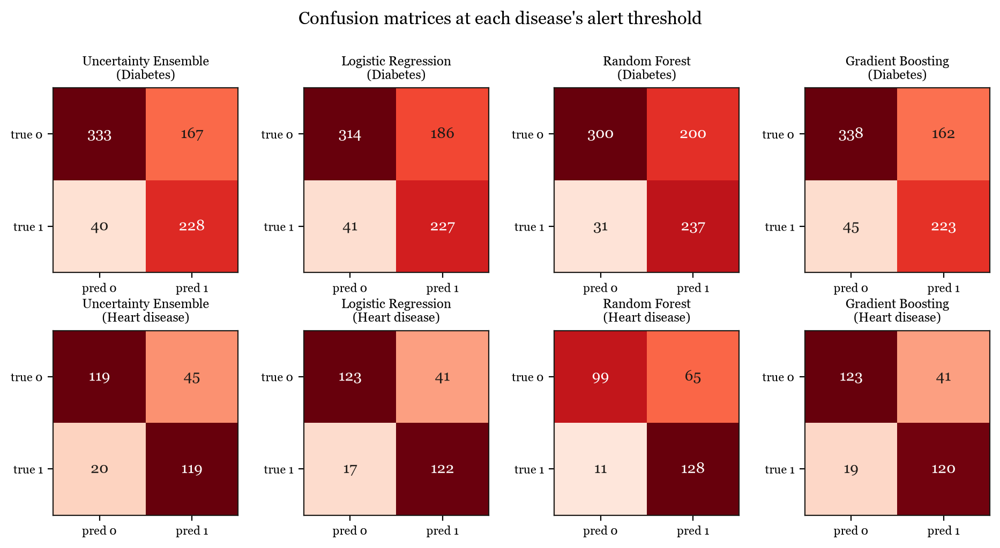
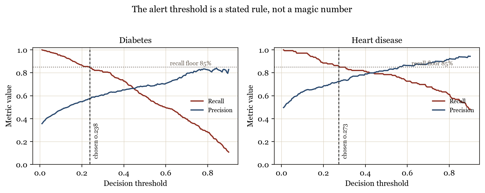
Figure 11 groups out-of-fold predictions into deciles and compares mean predicted risk with the observed disease rate in each group. Both diseases track the diagonal closely, meaning the probabilities shown to users are honest: patients told "about 30% risk" develop the disease roughly 30% of the time. This matters because the entire interface — tiers, bands, what-if deltas — is denominated in these probabilities.
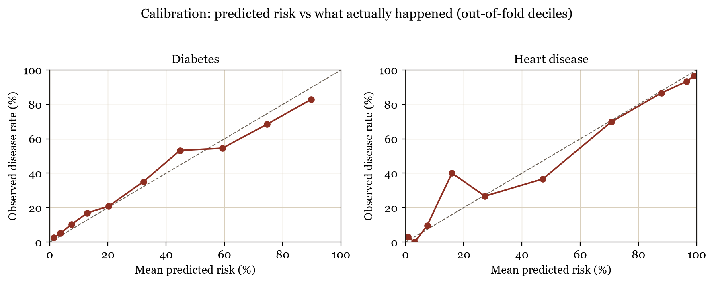
The central claim of this project is that the confidence band is not decoration. To test it, out-of-fold patients were sorted into quartiles by the width of their 90% band, and the classification error rate was measured within each quartile (Figure 13). The effect is large and monotonic: for diabetes, the error rate rises from 6% in the narrowest-band quartile to 43% in the widest; for heart disease, from 4% to 46%. When the 200 models agree, they are almost always right; when they disagree, the system says so — and it is precisely then that it errs. A user who trusts narrow bands and treats wide bands as "get a proper test" is served far better than by any single number.
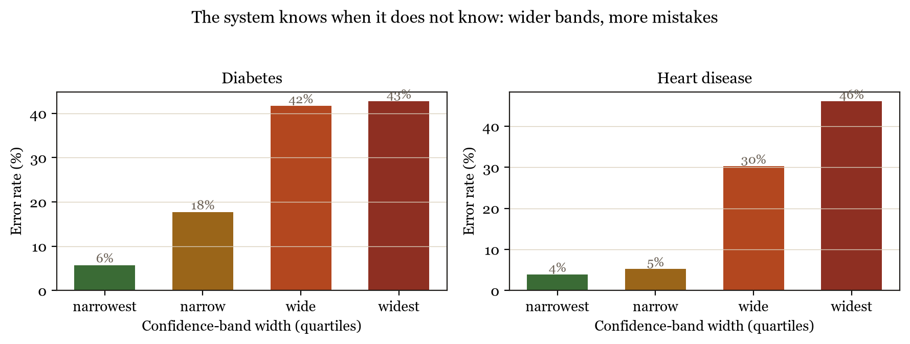
Figure 12 shows what this looks like for individual patients: a healthy profile yields a needle-thin distribution (band 1–2%), while a high-risk profile yields a visibly wide one (65–96%) — honest uncertainty a clinician can read at a glance.
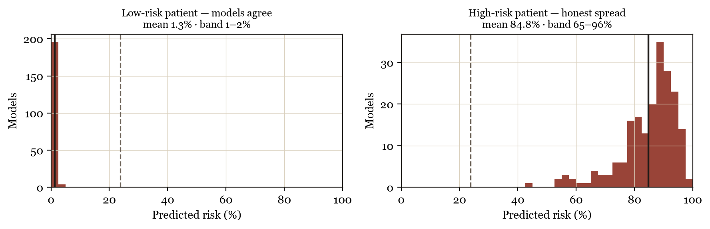
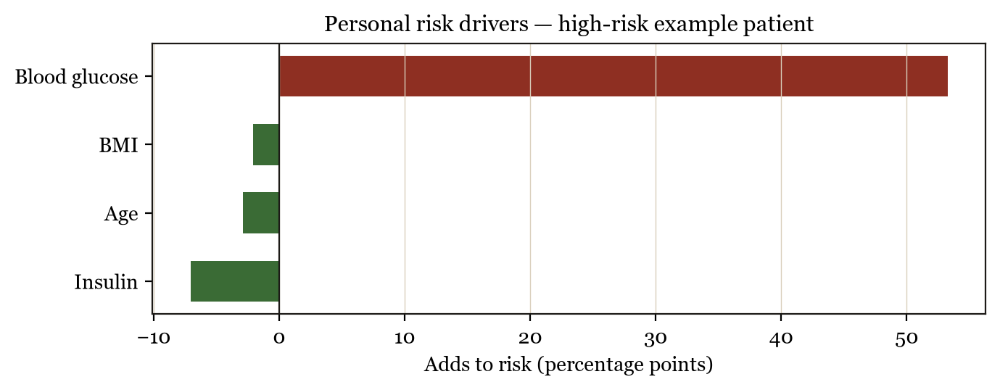
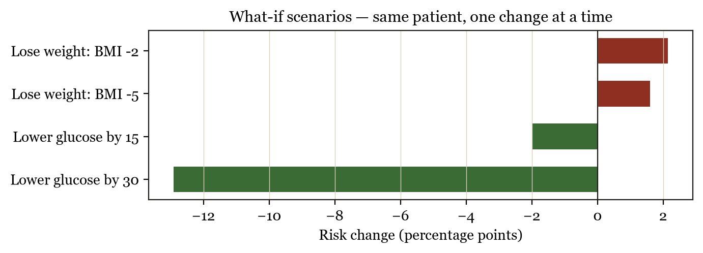
The delivery layer is a Streamlit application styled as an interactive lab report — paper ground, ink text, a single oxblood accent carrying all risk semantics — and deployed publicly at healthpredictor092005.streamlit.app. Its defining structural feature is a gated flow: on arrival the user sees an intake explainer and a form (Figure 16); no prediction exists until "Run assessment" is pressed, and the resulting report always opens with a summary strip naming exactly whose values it describes. This eliminates the confusing phantom-prediction state common in dashboard templates, where output for a default patient is visible before any input has been given.
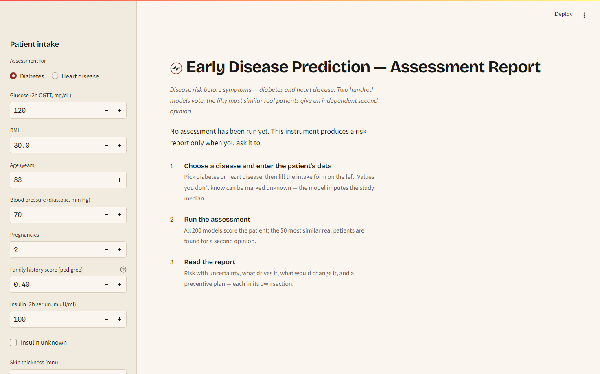
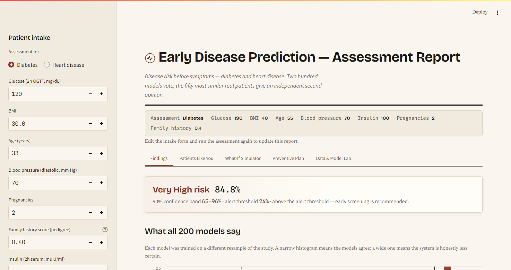
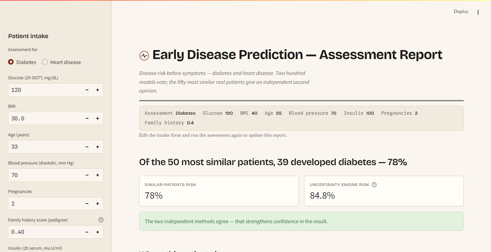
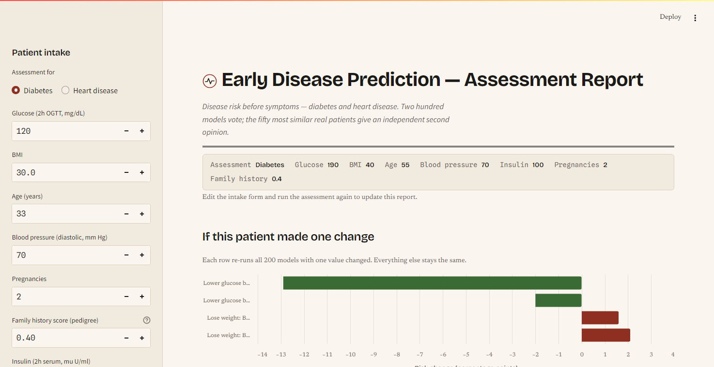
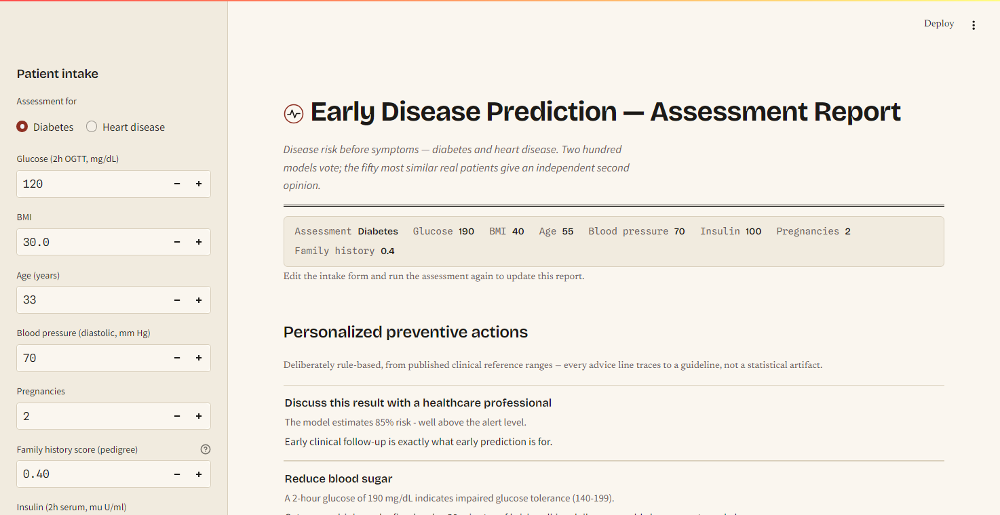
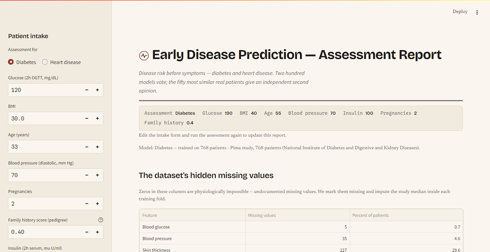
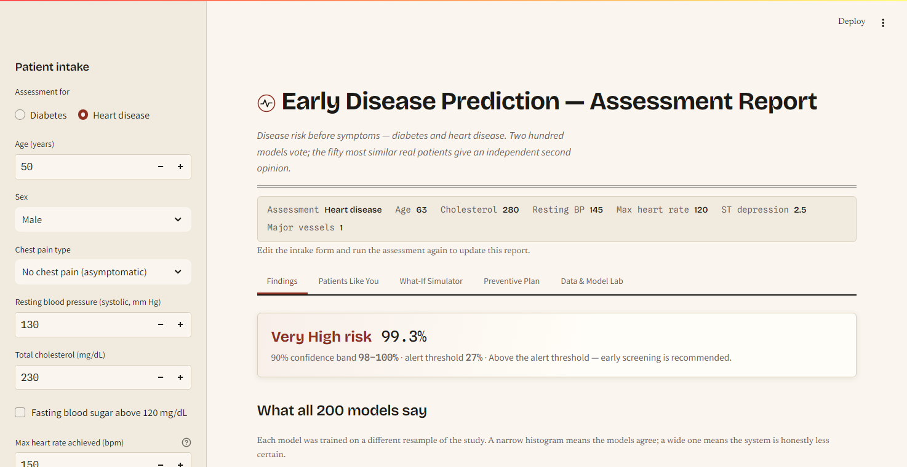
The codebase separates a disease-agnostic engine (src/edp/) from per-disease
plug-in configurations (src/edp/diseases/) and the interface (ui/).
A 15-test pytest suite guards the data repair, decision logic, explanation builders and
both engines. Training is a single reproducible script; every figure in this report was
generated by a committed script from the trained artifacts.
Serving performance was engineered deliberately (Figure 18): each patient is scored exactly once — the 200-member pass is memoized by (disease, patient values) and all five report sections read the same cached result — and a disease's 36 MB model file is loaded lazily, only when that disease is first assessed. Measured on the free-tier cloud deployment, interaction latency fell from roughly 22 seconds to 2–4 seconds after this change; only the first assessment after a cold start pays the model-loading cost.
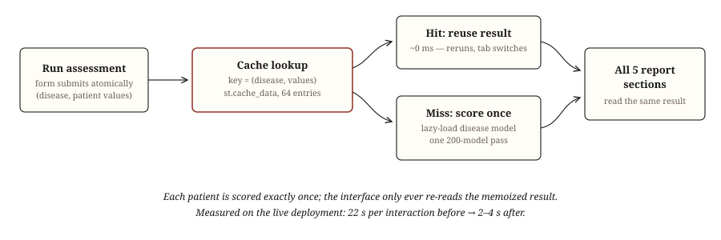
The system is an educational prototype and its results must be read accordingly:
This project set out to show that an early disease-prediction system can be honest about what it knows. The delivered system predicts diabetes and heart-disease risk with out-of-fold ROC AUC of 83.5% and 90.0% at ≥85% recall by construction; its probabilities are calibrated; and — the central result — its per-patient confidence bands are demonstrably informative, with error rates roughly seven to ten times higher among the widest bands than the narrowest. A model-free second opinion, jargon-free explanations, a what-if simulator and guideline-based preventive plans convert the score into something a person can act on, and the disease-registry architecture makes the whole construction extensible at the cost of one configuration file per new disease.
Natural next steps: adding a third disease (chronic kidney disease has a suitable UCI dataset) to further demonstrate the registry; external validation on a modern cohort such as NHANES; conformal prediction as a complementary uncertainty method with formal coverage guarantees; and a longitudinal mode that tracks a patient's risk trajectory across repeated assessments.
[1] Breiman, L. (1996). Bagging predictors. Machine Learning, 24(2), 123–140.
[2] Breiman, L. (2001). Random forests. Machine Learning, 45(1), 5–32.
[3] Friedman, J. H. (2001). Greedy function approximation: a gradient boosting machine. Annals of Statistics, 29(5), 1189–1232.
[4] Detrano, R., Janosi, A., Steinbrunn, W., et al. (1989). International application of a new probability algorithm for the diagnosis of coronary artery disease. American Journal of Cardiology, 64(5), 304–310.
[5] Grinsztajn, L., Oyallon, E., and Varoquaux, G. (2022). Why do tree-based models still outperform deep learning on typical tabular data? NeurIPS 2022.
[6] Smith, J. W., Everhart, J. E., Dickson, W. C., Knowler, W. C., and Johannes, R. S. (1988). Using the ADAP learning algorithm to forecast the onset of diabetes mellitus. Proceedings of the Annual Symposium on Computer Applications in Medical Care, 261–265.
[7] Cover, T., and Hart, P. (1967). Nearest neighbor pattern classification. IEEE Transactions on Information Theory, 13(1), 21–27.
[8] Diabetes Prevention Program Research Group (2002). Reduction in the incidence of type 2 diabetes with lifestyle intervention or metformin. New England Journal of Medicine, 346(6), 393–403.
[9] Efron, B. (1979). Bootstrap methods: another look at the jackknife. Annals of Statistics, 7(1), 1–26.
[10] Niculescu-Mizil, A., and Caruana, R. (2005). Predicting good probabilities with supervised learning. ICML 2005.
[11] Pedregosa, F., et al. (2011). Scikit-learn: machine learning in Python. Journal of Machine Learning Research, 12, 2825–2830.
[12] American Diabetes Association (2024). Standards of Care in Diabetes. Diabetes Care, 47(Supplement 1).